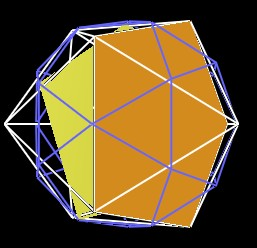

Note that the 30-Verti consists of 6 intersecting decagons.
| Figure 1 Six decagon planes inside 30-Verti |
Each of the decagons can be considered as two pentagons.
| Figure 2 Decagon is 2 pentagons |
So, from a counting point of view, we have 6x2=12 pentagons. But that is the same number of pentagons as the regular Dodecahedron.
And it is the same number of pentagons on "the surface" of the 30-Verti (Icosadodecahedron).
So, you could say that the internal structure of the 30-Verti mirrors the surface structure of the 30-Verti.
By the way, note that the Icosahedron can also be defined by 12 intersecting pentagons.
Consider the internal pentagons of the 30-Verti. There are a total of 12 such pentagons.
If we move them radially, so they all separate, and rotate them, we get an Icosahedron.
Continuing to move the 12 pentagons radially outward, there comes a point in which they define a regular Dodecahedron.
Moving them still further outward, they define another, larger 30-Verti.
The internal structure of the 30-Verti has now become the external structure.
Let us look at some of the mathematical details of this.
Note that we do not changed the size of the pentagons during the radial motion. Of course, changing the scale gives us another degree of freedom in the transformations. We continue to fix the size/scale of the pentagons and see what size/scale the resulting Icosahedron, Dodeacahedron and 30-Verti turn out to be.
By separating the decagons into 2 pentagons, and then moving the 12 pentagons radially outward, we first get the Icosahedron. (Note that the pentagons are rotated as they move radially outward.)
|  | ||
|
Figure 3 One of the 12 center pentagons moved
outward to become part of an Icosahedron |
||
When all 12 pentagons move radially outward and rotate, they define an Icosahedron.
|
Figure 4 12 center pentagons moved radially
outward to become an Icosahedron |
|
The pentagons are rotated by 18°.
The pentagons have moved radially a distance of...
Moving the pentagons still further outward, we get the regular Dodecahedron.
|
Figure 5 One of 12 pentagons moved radially
outward to become part of a regular Dodecahedron |
|
The pentagon is rotated by 54°.
The distance from the center of the pentagon face to a pentagon vertex is given by
where ELp is the edge length of the original 30-Verti in which the pentagon is internally defined. This is also the edge length of the pentagon.
This is also the radial distance to a vertex in the original 30-Verti.
The distance from the center of volume of the regular dodecahedron to the face center of a pentagon face of the dodecahedron is given by
| DVFreg.Dodeca = | sqrt( 25 + 11 sqrt(5) ) / ( 2 sqrt(10) ) ELreg.Dodeca |
| DVFreg.Dodeca = | 1.113516364... ELreg.Dodeca |
And since ELreg.Dodeca = ELp this is also the distance which the pentagons move radially to form the regular Dodecahedron.
When the pentagons move radially outward, another, larger 30-Verti is defined.
|
Figure 6 The center pentagon moved
outward to form the next, larger 30-Verti |
|
Note that in the above Figure, the two yellow pentagons appear to be of different size. They are actually the same size. It is the perspective of the figure which causes the pentagons to appear to be different sizes.
The pentagons which where defined by the interior of the first 30-Verti are now defining the surface of the larger 30-Verti.
The edge length of the small 30-Verti is given by
where "r" is the distance from the center of the pentagon's face to a pentagon's vertex.
The edge length of the large 30-Verti is given by
So the scale factor used to increase the small 30-Verti to the size of the large 30-Verti is given by
This work is copyrighted, 2003 by Robert W. Gray and Marvin Solit.
You may not use any of this material, nor any material on our linked web pages,
without first obtaining written permission.